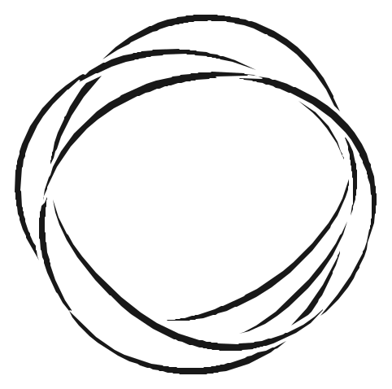

01 / 10
Поток
Движение и равновесие

KATYA KNITФактура, линия и тишина. Коллекция произведений, которые меняют характер пространства.
ПРОГУЛЯТЬСЯ ПО ГАЛЕРЕЕДесять произведений на светлой стене. Тонкие медные рамы, природные цвета и детали, которые хочется рассматривать вблизи.
Движение и равновесие
Пространство и тишина
Диалог линий
Непрерывность формы
Вертикаль и глубина
Тихая пластика
Ритм и напряжение
Природа и слои
Свобода движения
Равновесие и свет
Искусство, которое становится частью пространства.
ВЕРНУТЬСЯ К ВИДЕО ↗